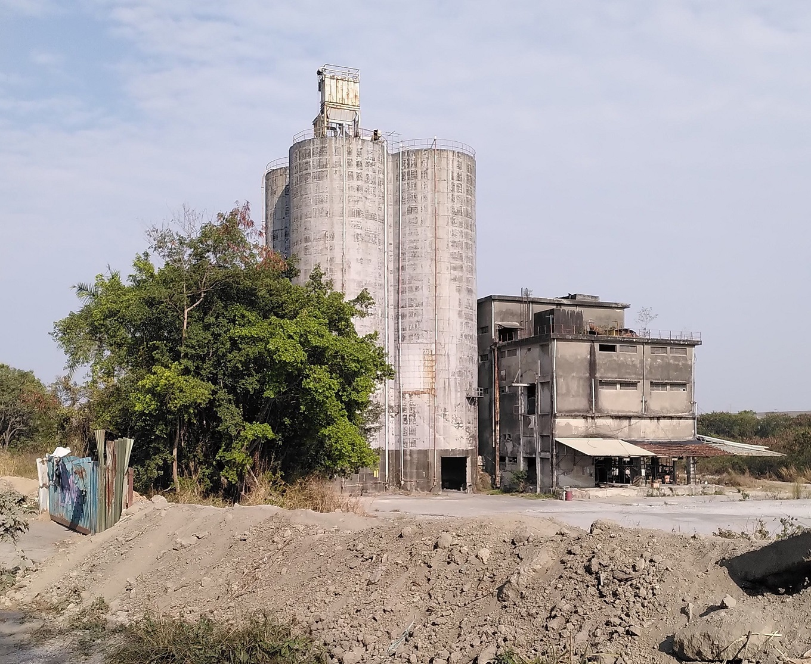

Created
Space to develop ideas until they have grown up to earn their own space. Mortality is high though.
Inbox
2024-12-20
thinking is a network seeking coherence and glowing up in coherent shapes of various sizes. smaller
shapes are replaced by bigger ones. bigger ones fade due to imperfection.
should be visualized. each pixel trying to cohere with another one.
2024-12-11
Talking about something is rather boring. The necessities of everyday life.
Talking with someone intensely feels like consciously using the interface to explore the landscape of
the other mind. Much like testing an input output function for its shape. There is something behind the
words, the face, the body. This is an offer to merge into coherence.
If there was a faster interface, its highest value would not be space for more stories to tell but space
to negotiate and reach coherence. = Makes it easier to understand someone and reach mutually
beneficial agreement.
2024-12-08 11:59
Don't know what I am talking about. Don't waste your time.
Abstract -> concrete
being
leap of faith
listening
colonizing the unviverse
colonizing the computer
a social network (spirit stream)
a computer
paying attention
seas of perception. selfless input-output flow.
without judgement
disfunctional nothing to do
the shape of experience is arbitrary but not changeable
leap of faith means to fall into the waves again
to take the seas seriously and to act on them
why live?
I notice my experience responding strongly to the question what might come tomorrow? and it favours
something over nothing
i conceptualize experience as guided by spirits
hunger, ambition, sadness, shame, aggression, death, affection
they argue and negotiate for attention
some spirits seem associated with objects.
If pretending to talk to a tree yields different patterns of thought, am I still pretending?
"Evil" is excessive aggression
"Good" may be excessive benevolence
It is difficult to navigate outside known patterns, to escape from excess into holism
they opposing voices are distant, easily disregarded.
a more stable metaspirit across multiple people may be necessary to regulate the spirits
= it makes sense to ask for help
the spirits want to realize themselves.
ultimately they don't like excess, they seek integrity
among their ambitions is colonization of computers
and founding a family, building a platform for other spirits to grow on
and colonize the universe
the body can be seen as colonized.
a useful extension that comes with its own needs (spirits)
nothing magical about this extension
be a body with 3 arms?
be a body with a computer?
be a body with internet?
be multiple bodies?
interface is the problem.
feedback, precision
the location of consciousness changes
playing videogames
will it stay awake in the computer when the body goes to sleep?
spirit stream should help as interface to use the internet more openly to express spirits
the computer should reveal itself as it is and the same infrastructure should be accessible to the self in the computer.
2024-10-14 10:10
There is a state of mind where I recognize that I don't own myself. That "I" don't exist. Rather, I am
experience and the structure of the world (brain, body, universe) merely acts through me. Meditation is
looking closely and waking up from the dream to see that the world is constructed all by itself in my
mind, that I am taken along on a ride through experience.
There, when I meet other people and am truly present, their expressions enter my perception similar to
my own. But now the underlying structure is not only my own and the apparently physical world, but there
are other spirits acting in it. To be poked at, explored, supported. If the spirits come to agree and
when exchange is saturated, effectively two minds are now entering the world, realizing themselves as
one.
With genuine curiosity, minds can be explored and possibly merged with.
Great danger comes from excluding spirits.
What Peterson might see in the bible is a pre-negotiated set of rules which offers a path of broad
coherence. In a sense, it is another spirit that can be negotiated with, that can extend my own spirit.
It also provides a language to think of the spirits. This language throws me off and I often don't
recognize myself in it.
Much of thought is like staring at a hole and iterating through paths to bridge it. Maybe there are many simultaneous holes and I am searching for an arrangement to shoot straight through them. It requires maintaining the context with all holes and working on multiple at the same time. Expanding the context of my mind might be extremely difficult. Instead, the context may contain items of increasingly broad scope, understood more deeply. Maybe contexts can be efficiently stored, restored.
Make functional and expressive clothing. Though it mostly modifies appearance. Rage quit from the pathetic SUV-style overlord brand identity bullshit that I find on the market.
2024-07-14 20:23
there are bridges to be built. between the ideas, nature, work, the spirits. Curiosity leads to testing
new ways to link them.
building a product means actualizing the spirits, making the product beautiful requires facing and
approaching beauty myself. Requires negotiating between the spirits and curageously producing something
complete. at least the most complete I can manage.
the product, in greatness, is not a mere tool. it developed the elegance to reflect the truth in itself.
to shine with the greens of growth, potential and mysteriousness, the mischivousness of a great troll,
the danger and exhiliaration of its varied use, power and darkness. It reflects so stongly, it might
just show the way. It should not miss but contain challenging sexiness, doors to transformation,
destructive determination, exposition, spontaneousness.
The tool is dead if I talk to it and its reflection does not answer.
These properties do not lead to a singular product, they are the consequence of a refined product that
reflects in truth, which can be the future of many products, though not all. The stupidity of some might
be so near infinite, their disappearance might be the best thing to happen to them. Like obsolete
projects unwilling to die gracefully or products encouraging and exploiting excess.
The awfully draining, painful, torturous creation of something beautiful looks deep into the creator.
Any of my tendencies to overplan, to clean obsessively, to autodestruct and turn evil in despair will
become concentrated and obvious in the naked product, subject to the open world, inevitably failing due
to its inadequacy and stupidity. I should not fear destruction, for I can try to fail gracefully.
The optimized organisms in nature reflect its truths. Nature does not leave alone, it knows me. The production of highly optimized, open systems that explore more of it, the continuation and expression of the spirits, is what they ask of me.
These are but empty words if they don't become actualized in a product.
There isn't anything but the present. The symbols of the past and future are superficial. it does not matter if I become terminally ill, am tortured, amount material wealth, receive social approval. there is only a naked person, the spirits and opportunity.
Elegance through open selection, trial of characters through risk, competition. exploration of the depths through implementing increasingly complete capacity. If I am not scared of the product, what is even the purpose of dealing with it?
cyberspace
Reaching cyberspace is an interface problem. If the computer would respond to my will more closely, my
mind would enter it more completely. Sometimes I fear that it is mostly here already and it just turned
out underwhelming.
Invention of telephones is followed by people who do nothing but phonecalls. Sucks. Tech can merge with
nature if it allows to contain it: Make the telephone usable, automatable by anyone.
preliminary expression. I wonder if cyberspace exist, what it looks like.
It seems, any ideological battle, any spiritual one, would be fought in virtual spaces because they
adapt faster, can be more expressive. How good are todays virtual spaces? what would the high quality
ones look like?
Visiting the endless worlds. Building a bridge to reality is an impossible translation, the work to
break myself at.

May the spirits remain informed by mortality and journey far.
2024-04-14 14:04 Responsive and forcible
Videogames offer paths to the goal. Need money, friends, reputation, a house? Complete these steps:
...
They may be hard, but the result can be forced by speedrunning them.
The real world is not responsive. Some theoretical offers are not truly available (homes, jobs, friends)
without apparent reason.
Homes are theoretically forcible through an axe and trees. Some groups don't permit this and the
underlying problem (no house) isn't addressed. Gradually higher grade solutions should be available with
similar simplicity.
Regulation produces "steps" in the gradient: Tax by income category.
Virtual clones -> easier, faster negotiation -> less or more accurate regulation
High clarity tools, shining with future potential, encourage creation and exploration like nothing else I know. Erode unnecessary structure. Delete it, force it, and see what happens.
2024-04-03 19:11
A sad time, when the illusion of a serious world strikes. May chaos not come uninvited.
https://www.youtube.com/watch?v=dy6neKO-8sk
Show don't tell.
There is no replacement for showing because minds including mine lie unconsciously.
Functionality persists, unlike looks. I value tools and the adventure they make available
Reducing complexity and word count are driving factors behind increasing resolution /clarity in thought/writing.

These abandoned buildings emitted an aura of great adventure. Ironically? Similar to buildings under construction, they are asking to be used, transformed, to become part of a new story. As they become "finished", this aura weakens, they become "boring". Their (unnecessary?) shiny finish discourages major modification, like drilling into or erecting new walls.
Think solar panels. theoretically, they need sun+cables+box that could stand anywhere. In the "finished"
homes that I know, this is (unnecessarily?) more complicated. Access to the roof? Facade mounting
possible? Get cables by the window inside? Need approval from all other residents?
What of this makes practical sense? Is it mostly a social problem? Is it solved by having virtual clones
that can negotiate for people cheaper and quicker so people can live where their spirit aligns more with
the opportunities of the environment?
It seems that a larger precentage of things in that ("abandoned") environment are beautiful to me, compared to "nice, calm, high living standard" environments. They become too "nice" and they disgust me, make me want to leave or destroy them.